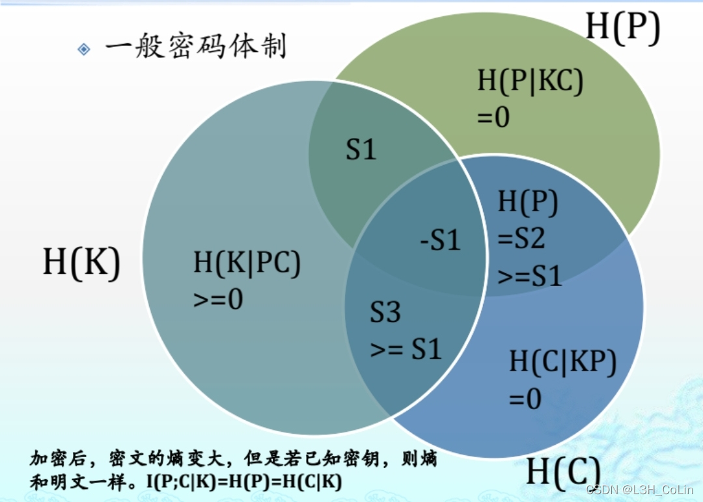
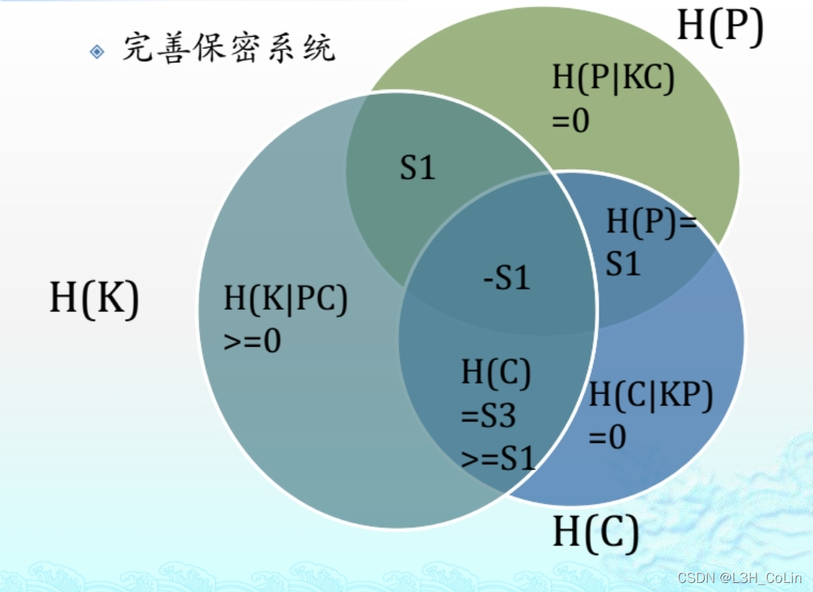
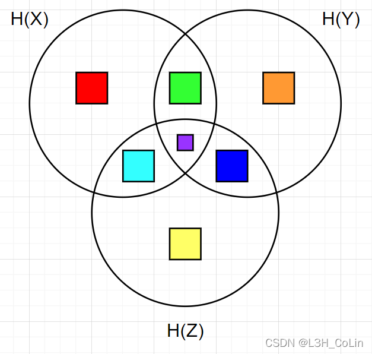

九、密码学中的熵关系
定理2.10
设(P,C,K,E,D)是一个密码体制，那么有H(K∣C)=H(K)+H(P)−H(C)
即截获密文后，密钥的熵等于明文的熵加密钥的熵减密文的熵（密钥含糊度）
证明：
由定理2.8：H(K∣C)=H(KC)−H(C)
明文与密钥之间没有任何统计规律，故有H(KP)=H(K)+H(P)
由密码体制的性质，当明文和密钥已知时，密文也随之确定，则有H(C∣KP)=0（信息量为0）
同理当密文与密钥已知时，明文也随之确定，故H(P∣KC)=0
由定理2.8：H(PKC)=H(P∣KC)+H(KC)=H(KC),H(CKP)=H(C∣KP)+H(KP)=H(KP)
故有H(KC)=H(KP)=H(K)+H(P)
故H(K∣C)=H(K)+H(P)−H(C)，证毕。
一般密码体制与熵有关的性质
- ∣P∣≤∣C∣（从明文空间到密文空间必为单射）
- H(P∣KC)=H(C∣KP)=0（见定理2.10证明部分）
- H(PK)=H(P)+H(K)（见定理2.10证明部分）
- 定理2.10结论
- H(P)≤H(C)≤H(P)+H(K)（H(K∣C)≤H(K)，由定理2.10推出）
- H(P∣C)≤H(K∣C)
推论：若∣P∣=∣C∣，且P随机等概率分布，则C一定随机等概率分布。此时H(K∣C)=H(K)
对于完善保密体制，还有下面的性质：
- H(P∣C)=H(P)
- ∣P∣≤∣C∣≤∣K∣(Pr[y∣x]=Pr[y]>0)
- H(P)≤H(C)≤H(K)
6.证明：
H(K∣C)=H(KC)−H(C),H(P∣C)=H(PC)−H(C)即证H(KC)≥H(PC)H(KPC)=H(PC)+H(K∣PC)=H(KC)+H(P∣KC)H(P∣KC)=0,H(K∣PC)>0⇒H(KC)≥H(PC)
9.证明：密钥随机等概率分布且由8可知，H(C)≤H(K)
H(P)=H(P∣KC)+H(PK)+H(CP∣K)=H(C∣K)≤H(C)(???)



上图中：
绿+紫=I(X;Y)；蓝+紫=I(Y;Z)；青+紫=I(X;Z)
绿=I(X;Y∣Z)；蓝=I(Y;Z∣X)；青=I(X;Z∣Y)
红=H(X∣YZ)；橙=H(Y∣XZ)；黄=H(Z∣XY)
紫=I(X;Y;Z)
红+青=H(X∣Y)；橙+蓝=H(Y∣X)；
红+绿=H(X∣Z)；黄+蓝=H(Z∣X)；
橙+绿=H(Y∣Z)；黄+青=H(Z∣Y)；
除黄所有=H(XY)；除红所有=H(YZ)；除橙所有=H(XZ)
青+紫+蓝=I(XY;Z)；绿+紫+蓝=I(XZ;Y)；绿+紫+青=I(YZ;X)
红+绿+橙=H(XY∣Z)；红+青+黄=H(XZ∣Y)；橙+蓝+黄=H(YZ∣X)
十、伪密钥
明文串每个分组使用同一个密钥加密得到密文串，考虑唯密文攻击方式，明文为某自然语言时，分析者可以排除某些密钥，但依然存在多个密钥使得明密文满足加解密函数时，其中只有一个密钥是正确的。称其他那些可能但不正确的密钥为伪密钥。（如移位密码对于不同的密钥有不同语义的单词明文出现）
（获得同一密钥加密的密文越长，存在伪密钥的可能性越小）
十一、自然语言的熵
有随机符号序列X=X1X2...Xn，其中Xi∈{x1,x2,...,xm}
单符号信源：仅有一个信号的信源，信号的种类服从一个概率分布。
多符号信源：有多个符号的信源。
非平稳信源——相同字符在不同位置的统计规律也不同：
H(X1X2...Xn)=H(X1)+H(X2∣X1)+H(X3∣X2X1)+...+H(Xn∣X1X2...Xn−1)
若各维联合概率分布与时间起点无关，则称为离散平稳信源。有
H(XiXi+1...H(Xi+n−1))=H(XjXj+1...Xj+n−1)
无记忆信源：每个符号统计独立，其熵值等于每个符号的熵之和。
有记忆信源：每个符号的统计规律有一定的关联
极限熵：当序列长度趋近于无穷大时，其中每一个字符的平均熵值：
H∞=n→∞limn1H(X1X2...Xn)=n→∞limn1H(Xn∣X1X2...Xn−1)
马尔可夫信源：如果xi只与前面的m个信号（xi-1，…，xi-m）相关，则称为马尔可夫信源
H(Xn∣X1X2...Xn−1)=H(Xn∣X1X2...Xn−m)
若英语中每个字母是随机使用的，则其熵H0=log226=4.7。但实际上根据每个英文字母在英文中出现的概率计算，英文字母的熵为4.19。随着统计字母组的长度增加，字母平均熵值呈下降趋势，当长度达到一定量时，熵值趋于稳定。
若定义Pn为n字母序列的概率分布构成的随机变量，则H(Pn)表示以n个字母为统计对象的熵值，其除以n表示以n个字母为统计对象时，单字母的平均熵
定义自然语言L的熵为HL=limn→∞nH(Pn)
统计得出大概范围为1.0~1.5，取1.25
自然语言冗余度：
RL=1−log2∣P∣HL=H0H0−HL
其中H0−HL称为语言冗余
英语约为0.75
唯一解距离：使得伪密钥期望值为0所需要的密文分组数量，即在给定足够的计算时间下分析者能够唯一计算出密钥所需明文的平均数量。
H(K∣Cn)=H(K)+H(Pn)−H(Cn).H(Pn)=nHL(P)=n(1−RL)log2∣P∣,H(Cn)≤nlog2∣C∣H(K∣Cn)≥log2∣K∣−nRLlog2∣P∣
令H(K∣Cn)=0得
n≥RLlog2∣P∣log2∣K∣
唯一解距离n0=RLlog2∣P∣log2∣K∣
十二、乘积密码体制
对于两个密码体制S1,S2，其明文空间和密文空间相同（内嵌式密码体制），S1=(P,P,K1,E1,D1),S2=(P,P,K2,E2,D2)，则S1和S2的乘积密码体制定义为S1×S2=(P,P,K1×K2,E,D)
e(k1,k2)(x)=ek2(ek1(x))d(k1,k2)(x)=dk1(dk2(x))
（实际上就是将明文先用S1加密后再用S2加密。）
幂等密码体制
使用一个密码体制将明文加密两次即为S2，加密n次则为Sn。
若S2=S则称该密码体制幂等，与自身做乘积无法提高算法安全性。
古典密码中的移位、代换、乘法、仿射、置换、维吉尼亚、希尔密码均为幂等。
若S1和S2为幂等的且为可交换的，则S1×S2也是幂等的
如果密码体制不是幂等的，那么可以通过与自身作多次乘积运算（迭代）来提高安全性（注意：这里的相等定义要注意，不是说选择一个密钥，将一个明文加密两次和加密一次得到的密文相等）
一种构造简单非幂等密码体制的方法是对两个不同的简单密码体制做乘积（必须保证两个密码体制不是可交换的）
证明两个内嵌式密码体制相等的方法：首先二者的明文空间相同，其次存在一个双射函数使两者密钥空间中的密钥一一对应相等。（两个密钥空间相互包含也可证明两密钥空间相等）[K相等且同分布]